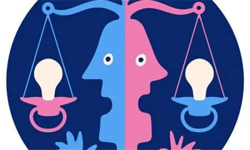

孖仔帮
公众号ID：twinsbang
关注
文|圆圈妈
网图|侵删
在养育双胞胎男孩5年多的历险过程中，最深切的感受就是，没有孩子是一模一样的，即便是同卵双胞胎也不例外。
虽然他们兄弟俩长着两张几乎一模一样的面孔，但我只凭他们说话的声音，走路的姿势，控球的方法，发怒的表情，就能分别出哪个是圆圆哪个是圈圈。
他们两个有太多不同甚至相反的个性，根本不存在难以区分的问题。
最棒的体验就是，每个孩子对不同情况做出的反应都不一样，每个孩子都有专属于自己的情感风格，所以在双胞胎哥俩闹脾气时，我的方法也是区别对待的。
1
圆圆，内心敏感脆弱，常常把自己的情绪闷在心里，不表达出来。特别是与小朋友抢玩具没抢赢，比赛输了，积木搭不好...这种状态会持续好长一段时间。
他把自己封闭起来，有时甚至拒绝说话，不管怎么撩他都不肯说。
这点我忍受不了，因为曾经的我就是这样的人，经常被坏情绪牵制着，别人进不来，自己走不出去，完全靠偶然间的自我救赎，我很清楚这种钻牛角尖的痛苦，不希望他也深受其害。
我知道该怎么拯救他脱离坏情绪，他非常需要一点空间去自己思考事情，然后才能慢慢冷静下来。
若在他还没准备好，或是还在情绪爆发的刀口时，着急着去说教开导，必定会适得其反，亲子关系必定伤痕累累。
而我能做的就是：忍！
忍住关心的焦灼之情，在他准备好跟我谈谈的时候，随时奉陪。
只要他肯开口说话，说出感受，一切都好办。带他去公园走走，去便利店买点小零食，一起聊一些开心神奇的事情，他就会慢慢跟我讲到底怎么回事。
而圈圈，正好跟圆圆相反，是个非常暴躁易怒的小孩。
因为怀着他们俩的时候，是上下铺，他就是那个被B超医生说挤得头变形的F2宝宝，被挤在耻骨处动弹不得，直到现在他的头型还是有点长而尖，我经常笑称他为小圈。
他生气时，如果我把他关到他自己的房间里去，他会更愤怒；如果让他自已待着，不去理会他，他会完全受不了。
这种愤怒的情绪会压垮他，在他这种愤怒的背后其实糅合着各种创伤和焦虑的情绪。
有时候，对于他如何处理自己的愤怒，我必须给他设置一个界限。
如果在小圈被坏情绪逼到濒临崩溃时不去介入、不去管他的话，他的情绪就会像火山喷发一样不可收拾，遭殃的我就像一个人孤零零站在高速公路快车道上，进退两难。
小圈是个外向的人，他需要的是妈妈及时与他交流，才能遏制这种恶劣情绪的扩散。
而我需要做的就是坐在他身旁，倾听他讲话，帮他理清这种状况。
这样两种截然不同的相处模式，目前来说非常适合我们娘仨。我很庆幸，我能赶在他们6岁的叛逆期前，找到一个属于我们娘仨，且不会彼此伤害，还能让三方关系稳定平衡的相处模式。
2
以前，我时常会陷入一碗水端平的误区，认为事事均等就是给他们绝对公平的爱，包括在处理他们的小情绪上，我也不敢有丝毫的偏差，甚至连安抚的语气，说教的音量都得拿捏得差不多才行，生怕被心思细腻的哥俩逮到说我不公平。
后面才知道，小屁孩懂个啥子公平，我总不能被牵着鼻子战战兢兢地走。
就性格而言，并无好坏之分，针对不同性格的双胞胎，我得尊重他们的不同，又要发自内心地接受这种不同，并针对性地给到孩子们不一样的“特殊待遇”，才是真正意义上的一碗水端平。
在人们的印象里（包括我们双胞胎家长），不同孩子有不同性格并不奇怪，而对自家的双胞胎孩子，却总是认为他们应该是相似的，甚至会不经意间把双胞胎当做一个整体，一旦出现性格不间，就会感到奇怪。
别急着否认哦！
想想看，你是不是经常看到一个娃是天使，另一个娃是魔鬼，而总是对魔鬼的娃抱怨为何他不能像那个天使娃一样好带又省心。
如果你真的有这种感受，那说明你已经潜意识地把他们当一个整体对待了。
把双胞胎当一个整体对待，很容易一刀切，做什么事情，都习惯流水线操作，捆绑式对待，而忽视了最基本的因人而异，因材施教。
生活中，你可以给双胞胎买一模一样的衣服鞋袜玩具，喂奶也是一个喂完换下一个，才不管另一个饿没饿，换尿不湿也是换完换下一个，也不管另一个尿没尿...这无可厚非，只是个习惯问题，怎么方便怎么来。
但是，在教育上，请及时摒弃这种惯性思维吧，分明是两个活生生的孩子，动静分明，独具特色，你总不能图自己方便，大刀阔斧，甭管啥事，先切再说。
双胞胎只是天生一对，并没有一模一样。
这里给小白双胞胎妈妈的建议是：多陪伴，多寻找，多发现，双胞胎身上的不同点和很多奇妙之处还等着我们去细心发掘哦！
有道是：正确的教养应从“观察”开始。
对我们双胞胎家长来说，这个‘观察’似乎要加倍重视些，有对比才有差异，在日常教育中发挥双胞胎孩子们彼此性格上的优势，针对具有代表性的事例，让两孩子一起讨论交流，取长补短，让他们从小就学会在相互欣赏中，彼此切磋中共同成长。
-END-
今日互动话题
#你家双胞胎的性格一样吗？#
评论区聊一聊呗！
微信公众号：孖仔帮
ID : twinsbang
专注双胞胎孕育，养育，教育经验分享
扫码关注我们
点一下你会更好看耶


